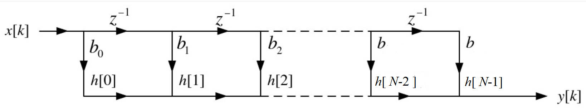
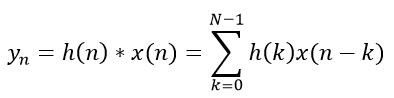
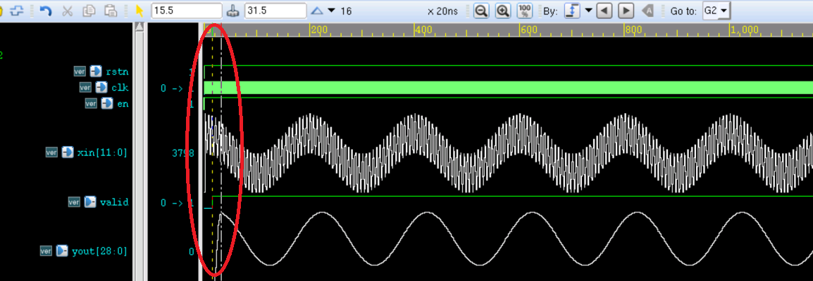
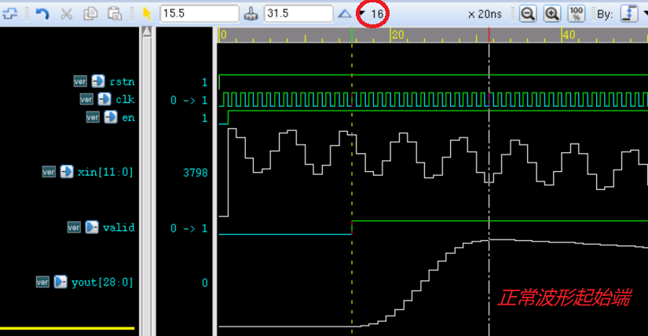

FIR (Finite Impulse Response) filter is a finite-length unit impulse response filter, also known as a non-recursive filter.
FIR filters have strict linear phase-frequency characteristics, and their unit response is finite, so they are stable systems and are widely used in digital communications, image processing, and other fields.
FIR Filter Principle
FIR filter is a finite-length unit impulse response filter. The direct-form structure is as follows:

The FIR filter is essentially the convolution of the input signal with the unit impulse response function, expressed as follows:

The FIR filter has the following characteristics:
- (1) The response is a finite-length sequence.
- (2) The system function converges at |z| > 0, all poles are at z=0, and it is a causal system.
- (3) Structurally it is non-recursive, with no feedback from output to input.
- (4) The phase response of the input signal is linear because the coefficients of the response function h(n) are symmetric.
- (5) The relative phase differences among the frequency components of the input signal are also fixed.
- (6) Convolution in the time domain equals multiplication in the frequency domain, so this convolution is equivalent to the gain factor for filtering each frequency component in the spectrum. Some frequency components are preserved, while others are attenuated, thereby achieving the filtering effect.
Parallel FIR Filter Design
Design Description
The input is a mixed sine wave signal with frequencies of 7.5 MHz and 250 KHz. After passing through the FIR filter, the high-frequency signal 7.5 MHz is removed, and only the 250 KHz signal is retained. The design parameters are as follows:
输入频率： 7.5MHz 和 250KHz 采样频率： 50MHz 阻带： 1MHz ~ 6MHz 阶数： 15（N-1=15）
From the FIR filter structure, when the order is 15, the implementation requires 16 multipliers, 15 adders, and 15 sets of delay registers. To stabilize the data of the first beat, one more set of delay registers can be used, so a total of 16 sets of delay registers are used. Due to the symmetry of the FIR filter coefficients, the number of multipliers can be reduced by half, using a total of 8 multipliers.
Parallel design means performing multiplication and addition on the 16 delayed data items simultaneously within one clock cycle, and then outputting the filtered value under the clock drive. The advantage of this method is short filtering delay, but it has relatively high timing requirements.
Parallel Design
For the multiplier module code used in this design, refer to the multiplier in the previous pipeline design.
To facilitate quick simulation, you can also directly use the multiplication sign*to complete the multiplication operation. A macro definition SAFE_DESIGN is added in the design to select which multiplier to use.
The FIR filter coefficients can be generated by matlab; see the appendix for details.
Example
>> V201001 : Fs：50Mhz, fstop：1Mhz-6Mhz, order： 15
************************************************************/
`define SAFE_DESIGN
module fir_guide (
input rstn, // Reset, active low
input clk, // Operating frequency, i.e., sampling frequency
input en, // Input data valid signal
input [11:0] xin, // Input signal data with mixed frequencies
output valid, // Output data valid signal
output [28:0] yout // Output data, low-frequency signal, i.e., 250KHz
);
//data en delay
reg [3:0] en_r ;
always @(posedge clk or negedge rstn) begin
if (!rstn) begin
en_r[3:0] <= 'b0 ;
end
else begin
en_r[3:0] <= {en_r[2:0], en} ;
end
end
//(1) 16 sets of shift registers
reg [11:0] xin_reg[15:0];
reg [3:0] i, j ;
always @(posedge clk or negedge rstn) begin
if (!rstn) begin
for (i=0; i<15; i=i+1) begin
xin_reg[i] <= 12'b0;
end
end
else if (en) begin
xin_reg[0] <= xin ;
for (j=0; j<15; j=j+1) begin
xin_reg[j+1] <= xin_reg[j] ; // Periodic shift operation
end
end
end
//Only 8 multipliers needed because of the symmetry of FIR filter coefficient
//(2) Coefficients are symmetric; add the first and last data from the 16 shift registers
reg [12:0] add_reg[7:0];
always @(posedge clk or negedge rstn) begin
if (!rstn) begin
for (i=0; i<8; i=i+1) begin
add_reg[i] <= 13'd0 ;
end
end
else if (en_r[0]) begin
for (i=0; i<8; i=i+1) begin
add_reg[i] <= xin_reg[i] + xin_reg[15-i] ;
end
end
end
//(3) 8 multipliers
// Filter coefficients, already amplified by a certain factor
wire [11:0] coe[7:0] ;
assign coe[0] = 12'd11 ;
assign coe[1] = 12'd31 ;
assign coe[2] = 12'd63 ;
assign coe[3] = 12'd104 ;
assign coe[4] = 12'd152 ;
assign coe[5] = 12'd198 ;
assign coe[6] = 12'd235 ;
assign coe[7] = 12'd255 ;
reg [24:0] mout[7:0];
`ifdef SAFE_DESIGN
// Pipeline multiplier
wire [7:0] valid_mult ;
genvar k ;
generate
for (k=0; k<8; k=k+1) begin
mult_man #(13, 12)
u_mult_paral (
.clk (clk),
.rstn (rstn),
.data_rdy (en_r[1]),
.mult1 (add_reg[k]),
.mult2 (coe[k]),
.res_rdy (valid_mult[k]), // All output enables are exactly the same
.res (mout[k])
);
end
endgenerate
wire valid_mult7 = valid_mult[7] ;
`else
// If timing requirements are not strict, you can directly use the multiplication sign
always @(posedge clk or negedge rstn) begin
if (!rstn) begin
for (i=0 ; i<8; i=i+1) begin
mout[i] <= 25'b0 ;
end
end
else if (en_r[1]) begin
for (i=0 ; i<8; i=i+1) begin
mout[i] <= coe[i] * add_reg[i] ;
end
end
end
wire valid_mult7 = en_r[2];
`endif
//(4) Accumulation, 8 groups of 25-bit data -> 1 group of 29-bit data
// Data valid delay
reg [3:0] valid_mult_r ;
always @(posedge clk or negedge rstn) begin
if (!rstn) begin
valid_mult_r[3:0] <= 'b0 ;
end
else begin
valid_mult_r[3:0] <= {valid_mult_r[2:0], valid_mult7} ;
end
end
`ifdef SAFE_DESIGN
// During addition, pipeline over multiple cycles to optimize timing
reg [28:0] sum1 ;
reg [28:0] sum2 ;
reg [28:0] yout_t ;
always @(posedge clk or negedge rstn) begin
if (!rstn) begin
sum1 <= 29'd0 ;
sum2 <= 29'd0 ;
yout_t <= 29'd0 ;
end
else if(valid_mult7) begin
sum1 <= mout[0] + mout[1] + mout[2] + mout[3] ;
sum2 <= mout[4] + mout[5] + mout[6] + mout[7] ;
yout_t <= sum1 + sum2 ;
end
end
`else
// Calculate the accumulation result in one step, but in practice the timing is very dangerous
reg signed [28:0] sum ;
reg signed [28:0] yout_t ;
always @(posedge clk or negedge rstn) begin
if (!rstn) begin
sum <= 29'd0 ;
yout_t <= 29'd0 ;
end
else if (valid_mult7) begin
sum <= mout[0] + mout[1] + mout[2] + mout[3] + mout[4] + mout[5] + mout[6] + mout[7];
yout_t <= sum ;
end
end
`endif
assign yout = yout_t ;
assign valid = valid_mult_r[0];
endmodule
testbench
The testbench is written as follows. Its main function is to continuously input the sine wave mixed signal data of 250KHz and 7.5MHz without interruption. The input mixed signal data can also be generated by matlab; see the appendix for details.
Example
module test ;
//input
reg clk ;
reg rst_n ;
reg en ;
reg [11:0] xin ;
//output
wire valid ;
wire [28:0] yout ;
parameter SIMU_CYCLE = 64'd2000 ; // 50MHz sampling frequency
parameter SIN_DATA_NUM = 200 ; // Simulation period
//=====================================
// 50MHz clk generating
localparam TCLK_HALF = 10_000;
initial begin
clk = 1'b0 ;
forever begin
# TCLK_HALF ;
clk = ~clk ;
end
end
//============================
// reset and finish
initial begin
rst_n = 1'b0 ;
# 30 rst_n = 1'b1 ;
# (TCLK_HALF * 2 * SIMU_CYCLE) ;
$finish ;
end
//=======================================
// read signal data into register
reg [11:0] stimulus [0: SIN_DATA_NUM-1] ;
integer i ;
initial begin
$readmemh("../tb/cosx0p25m7p5m12bit.txt", stimulus) ;
i = 0 ;
en = 0 ;
xin = 0 ;
# 200 ;
forever begin
@(negedge clk) begin
en = 1'b1 ;
xin = stimulus[i] ;
if (i == SIN_DATA_NUM-1) begin // Periodically feed data control
i = 0 ;
end
else begin
i = i + 1 ;
end
end
end
end
fir_guide u_fir_paral (
.xin (xin),
.clk (clk),
.en (en),
.rstn (rst_n),
.valid (valid),
.yout (yout));
endmodule
Simulation Results
From the simulation results in the figure below, the signal after the FIR filter contains only one low-frequency signal (250KHz), and the high-frequency signal (7.5MHz) has been filtered out. Moreover, the output waveform is continuous and can be output continuously.
However, as shown in the red circle, the beginning of the waveform is irregular. Zoom in on this part.

After zooming in on the beginning of the waveform, as shown in the figure below, it can be seen that the time period of the irregular waveform, i.e., the time interval between the two vertical lines, is 16 clock cycles.
Because the data is input serially and 16 sets of delay registers are used in the design, the first normal point after filtering should be delayed by 16 clock cycles from the first filtered data output moment. That is, the data output valid signal valid should be delayed by another 16 clock cycles, which will make the output waveform more perfect.

Appendix: matlab Usage
Generating FIR Filter Coefficients
Open matlab, and enter the command in the command window: fdatool.
Then the following window will open; set the parameters according to the FIR filter.
The FIR implementation method selected here is least-squares (Least-squares). Different implementation methods produce different filtering effects.

Click File -> Export
Export the filter parameters and store them in the variable coef, as shown in the figure below.

At this point, the coef variable should be floating-point data. Multiply it by a certain factor to expand it, and then take its approximate fixed-point data as the FIR filter parameters in the design. Here the expansion factor is 2048, and the results are as follows.

Generating the Input Mixed Signal
The reference code for generating the mixed input signal using matlab is as follows.The signal is unsigned fixed-point data with a bit width of 12 bits, stored in a filecosx0p25m7p5m12bit.txt。
Example
%=======================================================
% generating a cos wave data with txt hex format
%=======================================================
fc = 0.25e6 ; %Center frequency
fn = 7.5e6 ; %Clutter frequency
Fs = 50e6 ; %Sampling frequency
T = 1/fc ; %Signal period
Num = Fs * T ; %Number of signal sampling points in one period
t = (0:Num-1)/Fs ; %Discrete time
cosx = cos(2*pi*fc*t) ; %Center frequency sine signal
cosn = cos(2*pi*fn*t) ; %Clutter signal
cosy = mapminmax(cosx + cosn) ; %Amplitude expanded to the range (-1,1)
cosy_dig = floor((2^11-1) * cosy + 2^11) ; %Amplitude expanded to0~4095
fid = fopen('cosx0p25m7p5m12bit.txt', 'wt') ; %Write data file
fprintf(fid, '%x\n', cosy_dig) ;
fclose(fid) ;
%Time-domain waveform
figure(1);
subplot(121);plot(t,cosx);hold on ;
plot(t,cosn) ;
subplot(122);plot(t,cosy_dig) ;
%Frequency-domain waveform
fft_cosy = fftshift(fft(cosy, Num)) ;
f_axis = (-Num/2 : Num/2 - 1) * (Fs/Num) ;
figure(5) ;
plot(f_axis, abs(fft_cosy)) ;
Click Me to Share Notes
<p style="font-size:14px;">The note must be an extension of the content of this article!</p><br> <p style="font-size:12px;"><a href="../tougao.html" target="_blank">To submit an article, click here</a></p> <p style="font-size:14px;"><a href="./runoob-user-test-intro.html" target="_blank">How to obtain a registration invitation code</a></p> <h3 class="text-muted"><i class="fa fa-info-circle" aria-hidden="true"></i> Before sharing notes, you must <a href=".." class="runoob-pop">log in</a>!</h3> <p><a href="./runoob-user-test-intro.html" target="_blank">How to obtain a registration invitation code</a></p>